google/gemini-2.5-flash-lite
mean reward 0.776 · compile rate 92% · 120 valid rollouts. Blue = reference; green ≥ 0.9, orange ≥ 0.4, red below. Hover a tile for the generated OpenSCAD.
L1 · example 0 · mean 1.00 · max 1.00
A solid rectangular box 15mm wide, 15mm deep, and 35mm tall.

;")
L2 · example 1 · mean 0.83 · max 1.00
A solid hexagonal prism 35mm tall, 60mm across the flats, with two flats parallel to the x axis, with a 12mm-radius hole drilled vertically through the center of the entire part. The part sits on the z=0 plane, centered on the Z axis.

 {
linear_extrude(height = 35, center = false, $fn=64) {
// Hexagon
// r = side_length / sqrt(3)
// side_length = r * sqrt(3)
// h = height of hexagon which is 2 * apothem
// apothem = side_length * sqrt(3) / 2
// distance across flats = 2 * apothem = side_length * sqrt(3)
// side_length = distance across flats / sqrt(3)
// distance across flats = 60mm
// side_length = 60 / sqrt(3)
// apothem = 60 / 2 = 30mm
// radius of inscribed circle = apothem = 30mm
// radius of circumscribed circle = side_length * sqrt(3) / sqrt(3) = side_length = 60 / sqrt(3)
// Radius for polygon function is distance from center to vertex, which is the circumradius
// For a polygon with n")

// apothem = width / 2
apothem = 60 / 2;
// Calculate the radius of the circumscribed circle (distance from center to vertex)
// For a regular hexagon, apothem = radius * cos(30 degrees)
// radius = apothem / cos(30 degrees)
radius = apothem / cos(30);
difference() {
// Solid hexagonal prism
linear_extrude(height = 35)
polygon(points=[
[radius * cos(0), radius * sin(0)],
[radius * cos(60), radius * sin(60)],
[radius * cos(120), radius * sin(120)],
[radius * cos(180), radius * sin(180)],
[radius * cos(240), radius * sin(240)],
[radius * cos(300), radius * sin(300)]
]);
// Hole drilled vertically through the cent")
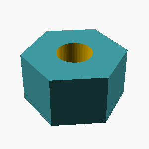
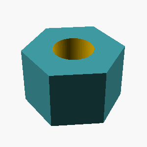
L5 · example 2 · mean 1.00 · max 1.00
Create a triangular prism standing 45mm tall: its base is a right triangle with legs of 20mm (along X) and 30mm (along Y) meeting at the origin.

 {
polygon(points = [[0,0], [20,0], [0,30]]);
}")
 {
polygon(points = [[0,0], [20,0], [0,30]]);
}")
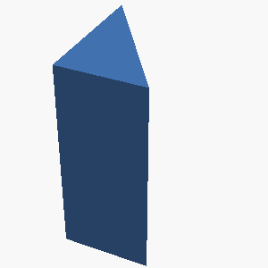
L4 · example 3 · mean 0.47 · max 0.81
A solid hexagonal prism 50mm tall, 40mm across the flats, with two flats parallel to the x axis, with a 3mm-radius hole drilled vertically through the center of the entire part; and a cone of base radius 12mm and height 20mm standing centered on its top face, apex up. The part sits on the z=0 plane, centered on the Z axis.

 {
r_flat = width_across_flats / 2;
r_circum = r_flat / cos(30);
polygon(points=[
[r_circum * cos(0), r_circum * sin(0)],
[r_circum * cos(60), r_circum * sin(60)],
[r_circum * cos(120), r_circum * sin(120)],
[r_circum * cos(180), r_circum * sin(180)],
[r_circum * cos(240), r_circum * sin(240)],
[r_circum * cos(300), r_circum * sin(300)]
]);
}
difference() {
union() {
// Hexagonal Prism
linear_extrude(height=50) {
hexagonal_prism(height=50, width_across_flats=40);
}
// Cone
translate([0, 0, 50]) {
cylinder(h=20, r1=12, r2=0);
}
}
// Center Hole
translate([0, 0, -0.1]) { // Start s")
 {
// Calculate the apothem (distance from center to midpoint of a flat)
apothem = width_across_flats / 2 * cos(30); // cos(30) = sqrt(3)/2
// Calculate the radius of the circumcircle (distance from center to a vertex)
radius_circumcircle = width_across_flats / 2; // distance from center to vertex
polygon( points=[
[radius_circumcircle * cos(0), radius_circumcircle * sin(0)],
[radius_circumcircle * cos(60), radius_circumcircle * sin(60)],
[radius_circumcircle * cos(120), radius_circumcircle * sin(120)],
[radius_circumcircle * cos(180), radius_circumcircle * sin(180)],
[radius_circumcircle * cos(240), radius_circumcircle * sin(240)],
[radius_circumcircle * cos(300)")
 {
// Calculate apothem (distance from center to midpoint of a side)
apothem = side_dimension / 2 * sqrt(3);
// Calculate distance from center to a vertex
vertex_distance = side_dimension;
// Create a 2D hexagon shape
linear_extrude(height = height) {
polygon(points=[
[apothem, side_dimension/2],
[apothem, -side_dimension/2],
[0, -side_dimension],
[-apothem, -side_dimension/2],
[-apothem, side_dimension/2],
[0, side_dimension]
]);
}
}
// Main object
difference() {
// Hexagonal prism
hexagonal_prism(height=50, side_dimension=40);
// Vertical hole
translate([0, 0, -0.1]) cylinder(h=50.2, r=3);")
 {
polygon(points=[
[size, 0],
[size * cos(60), size * sin(60)],
[size * cos(120), size * sin(120)],
[size * cos(180), size * sin(180)],
[size * cos(240), size * sin(240)],
[size * cos(300), size * sin(300)]
]);
linear_extrude(height = height);
}
difference() {
union() {
// Hexagonal prism
translate([0, 0, 0]) rotate([0, 0, 30]) hexagonal_prism(height = 50, size = 40/(2*cos(30))); // Size is distance from center to vertex, derived from distance across flats
// Cone on top
translate([0, 0, 50]) cone(h = 20, r1 = 12, r2 = 0);
}
// Central hole
cylinder(h = 50.1, r = 3, center = true); // Extend slightly beyond the")
L1 · example 4 · mean 1.00 · max 1.00
A solid cylinder 25mm tall with a radius of 20mm, standing upright.

;")
;")
L5 · example 5 · mean 1.00 · max 1.00
Create a triangular prism standing 25mm tall: its base is a right triangle with legs of 45mm (along X) and 30mm (along Y) meeting at the origin.

 {
polygon(points = [[0,0], [45,0], [0,30]]);
}")
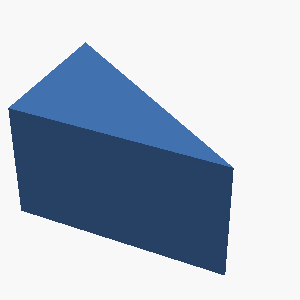

polygon(points = [[0, 0], [45, 0], [0, 30]]);")
L3 · example 6 · mean 0.48 · max 0.75
A solid hexagonal prism 25mm tall, 50mm across the flats, with two flats parallel to the x axis, with 4 holes of radius 2mm drilled vertically through it, evenly spaced on a circle of radius 18.1mm around the center, the first hole on the +X axis; and a 8mm-radius hole drilled vertically through the center of the entire part. The part sits on the z=0 plane, centered on the Z axis.

 {
// Dimensions of the hexagonal prism
height = 25;
size_across_flats = 50;
apothem = size_across_flats / 2; // Distance from center to the flat side
radius = apothem / cos(30); // Distance from center to vertex
// Create the hexagonal shape
polygon(points=[
[0, apothem],
[radius * sin(60), apothem * cos(60)],
[radius * sin(60), -apothem * cos(60)],
[0, -apothem],
[-radius * sin(60), -apothem * cos(60)],
[-radius * sin(60), apothem * cos(60)]
]);
}
difference() {
// Main hexagonal prism body
linear_extrude(height=25, center=false) {
hexagonal_prism();
}
// Central hole
translate([0, 0, -0.1]) { // Extend slightly for clean cut
cylinder(h=2")
 {
hull() {
for (i = [0:5]) {
rotate([0,0,i*60]) translate([(width_across_flats/2)/cos(30), 0, 0]) cylinder(h=height, r=0.1);
}
}
}
module main_part() {
hex_height = 25;
hex_width_flats = 50;
hole_radius = 2;
center_hole_radius = 8;
hole_circle_radius = 18.1;
difference() {
hexagonal_prism(hex_height, hex_width_flats);
// Small holes
for (i = [0:3]) {
angle = 90 + i*90; // First hole on +X axis (90 degrees in OpenSCAD polar coordinates), then spaced by 90 degrees
translate([
hex_height/2, // Move to middle of Z height for cylinder positioning
cos(angle) * hole_circle_radius,")
 {
// Calculate the apothem (distance from center to a flat)
apothem = width_flat / sqrt(3);
// Calculate the radius of the circumscribed circle
circumradius = width_flat * 2 / sqrt(3);
linear_extrude(height=height) {
polygon(points=[
[circumradius, 0],
[circumradius/2, apothem],
[-circumradius/2, apothem],
[-circumradius, 0],
[-circumradius/2, -apothem],
[circumradius/2, -apothem]
]);
}
}
difference() {
// Main hexagonal prism
hexagonal_prism(height=25, width_flat=50);
// Center hole
translate([0, 0, -0.1]) cylinder(h=25.2, r=8);
// Four smaller holes
for (i = [0:3]) {
angle = 90 * i; // First")
 {
// Calculate the apothem (distance from center to midpoint of a flat)
apothem = width_across_flats / 2;
// Calculate the radius of the circumscribed circle
radius = apothem / cos(30);
polygon(points=[
for(i = [0:5])
[radius * cos(60*i), radius * sin(60*i)]
]);
linear_extrude(height=height);
}
// Main part
difference() {
// Solid hexagonal prism
hexagonal_prism(height=25, width_across_flats=50);
// Center hole
translate([0, 0, -0.1]) cylinder(h=25.2, r=8);
// Four evenly spaced holes
for (i = [0:3]) {
angle = 90 * i; // First hole on +X axis (0 degrees)
x_offset = 18.1 * cos(angle);
y_offset = 18.1")
L4 · example 7 · mean 0.48 · max 0.93
A solid hexagonal prism 50mm tall, 35mm across the flats, with two flats parallel to the x axis, with hollowed out from the top into an open container with 5mm thick walls and floor. The part sits on the z=0 plane, centered on the Z axis.

 {
module hexagon(flat_to_flat) {
radius = flat_to_flat / sqrt(3);
polygon(points=[
[radius, 0],
[radius * cos(60), radius * sin(60)],
[radius * cos(120), radius * sin(120)],
[radius * cos(180), radius * sin(180)],
[radius * cos(240), radius * sin(240)],
[radius * cos(300), radius * sin(300)]
]);
}
linear_extrude(height=height) hexagon(flat_to_flat);
}
height = 50;
flat_to_flat = 35;
wall_thickness = 5;
difference() {
hexagonal_prism(height, flat_to_flat);
translate([0, 0, wall_thickness]) {
scale([1, 1, 0.99]) { // Slightly taller to ensure proper cut
hexagonal_prism(height, flat_to_flat - 2 * wall_th")
 {
// Calculate the apothem (distance from center to flat)
apothem = 35 / 2;
// Calculate the distance from center to vertex
vertex_dist = apothem / cos(30); // 60 degrees internal angle, half is 30
polygon(points=[
[apothem, -vertex_dist * sin(60)],
[apothem, vertex_dist * sin(60)],
[0, vertex_dist],
[-apothem, vertex_dist * sin(60)],
[-apothem, -vertex_dist * sin(60)],
[0, -vertex_dist]
]);
}
module hollowed_hex_prism(height, wall_thickness) {
outer_apothem = 35 / 2;
outer_vertex_dist = outer_apothem / cos(30);
// Make sure the polygon points are calculated correctly if rotation is needed
module rotated_hex_polygon(apothem, vertex_dist) {
polygon(points=[")
 {
circumradius = flat_to_flat / cos(30);
polygon(points=[
[circumradius * cos(0), circumradius * sin(0)],
[circumradius * cos(60), circumradius * sin(60)],
[circumradius * cos(120), circumradius * sin(120)],
[circumradius * cos(180), circumradius * sin(180)],
[circumradius * cos(240), circumradius * sin(240)],
[circumradius * cos(300), circumradius * sin(300)]
]);
}
module hex_container(height, flat_to_flat, wall_thickness) {
outer_flat_to_flat = flat_to_flat;
inner_flat_to_flat = flat_to_flat - 2 * wall_thickness;
difference() {
// Outer prism
linear_extrude(height=height) {
hexagonal_prism(height=height, flat_to_flat=outer_flat_to_fla")

a = 35 / 2;
// Calculate side length (s) using apothem: a = (s/2) * sqrt(3)
s = (2 * a) / sqrt(3);
module hexagonal_prism(height, apothem) {
// Calculate radius from apothem: apothem = radius * cos(pi/6)
radius = apothem / cos(pi/6);
polygon(points = [
[radius * cos(0), radius * sin(0)],
[radius * cos(60), radius * sin(60)],
[radius * cos(120), radius * sin(120)],
[radius * cos(180), radius * sin(180)],
[radius * cos(240), radius * sin(240)],
[radius * cos(300), radius * sin(300)]
]);
}
module hollow_hexagonal_prism(height, wall_thickness, apothem) {
// Calculate apothem for the inner hollow
inner_apothem = apothem - wall_thickness;
outer_radius = apoth")
L5 · example 8 · mean 0.62 · max 1.00
Create a 35mm-tall prism shaped like a plus sign, formed by two perpendicular 60mm x 20mm bars crossing at their midpoints.


union() {
// Horizontal bar
translate([-30, -10, 0])
cube([60, 20, 35]);
// Vertical bar
translate([-10, -30, 0])
cube([20, 60, 35]);
}")
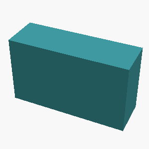
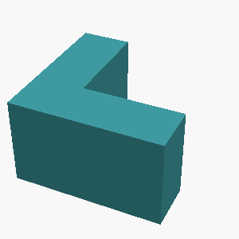
 {
// Base shape is a 60x20 rectangle
base_width = 60;
base_height = 20;
prism_height = 35;
// Create the two bars for the plus sign
bar1_pos = [0, 0, 0];
bar2_pos = [0, 0, 0];
// Horizontal bar
translate(bar1_pos)
cube([base_width, base_height, prism_height]);
// Vertical bar
// Rotate the vertical bar 90 degrees around the z-axis
translate(bar2_pos)
rotate([0, 0, 90])
cube([base_width, base_height, prism_height]);
}
// Combine the two bars to form the plus sign shape.
// This is done by unioning them.
union() {
plus_sign();
}")
L2 · example 9 · mean 0.75 · max 0.75
An open-top rectangular container with outer dimensions 55mm x 70mm x 55mm, wall and floor thickness 5mm.

 {
cube([55, 70, 55]);
translate([5, 5, 0]) {
cube([55 - 2*5, 70 - 2*5, 55]);
}
}")
 {
cube([55, 70, 55]);
translate([5, 5, -1]) { // Offset slightly to ensure complete cutout for floor
cube([55 - 2 * 5, 70 - 2 * 5, 55]);
}
}")
L3 · example 10 · mean 1.00 · max 1.00
A stepped circular shaft standing upright, made of 2 stacked coaxial cylinders from bottom to top: a section of radius 35mm and height 25mm, then a section of radius 20mm and height 20mm. Each section is narrower than the one below it.

 {
// Bottom section
cylinder(h=25, r=35);
// Top section
translate([0, 0, 25]) {
cylinder(h=20, r=20);
}
}")
 {
// Bottom section
cylinder(h = 25, r = 35);
// Top section
translate([0, 0, 25]) {
cylinder(h = 20, r = 20);
}
}")
 {
cylinder(h=25, r=35);
translate([0, 0, 25]) {
cylinder(h=20, r=20);
}
}")
;
// Top section
translate([0, 0, 25]) {
cylinder(r=20, h=20);
}")
L5 · example 11 · mean 0.87 · max 0.89
A flat rectangular plate 90mm x 50mm and 11mm thick, with a rounded slot cut all the way through its center: the slot is 64mm long along the X direction and 12mm wide, with semicircular ends.

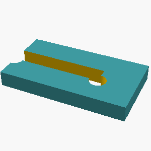
 {
cube([90, 50, 11]);
translate([32, 19, -1]) {
union() {
square([32, 12]);
for (i = [0, 1]) {
translate([i * 32, 0, 0]) {
rotate([0, 0, i * 180]) {
cylinder(h=12, r=6, $fn=64);
}
}
}
}
}
}")
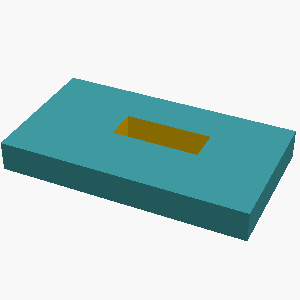
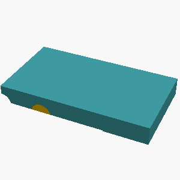
L1 · example 12 · mean 1.00 · max 1.00
A solid rectangular box 10mm wide, 55mm deep, and 60mm tall.

;")
L2 · example 13 · mean 0.84 · max 1.00
A solid box 45mm x 25mm x 60mm with a rectangular notch 10mm wide and 13mm deep cut into the middle of its top face, running through the full depth of the box.

 {
cube([45, 25, 60]);
translate([ (45 - 10) / 2, 0, 60 - 13 ]) {
cube([10, 25, 13]);
}
}")
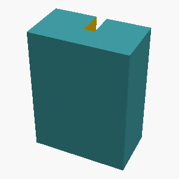
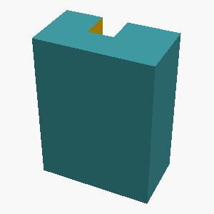
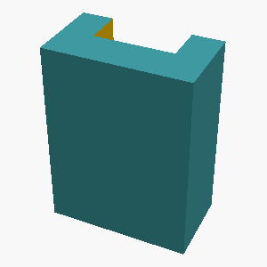
L5 · example 14 · mean 1.00 · max 1.00
A vertical prism 45mm tall whose footprint is a right triangle with one leg 35mm along the X axis and the other leg 20mm along the Y axis, right angle at the origin.

 {
polygon(points = [[0,0], [35,0], [0,20]]);
}")
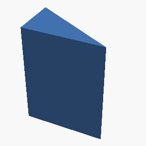
 {
polygon(points = [[0,0], [35,0], [0,20]]);
}")
L4 · example 15 · mean 0.54 · max 1.00
A hexagonal prism (like a nut) 18mm tall, measuring 30mm across the flats, with a circular hole of radius 5mm drilled through its center along the axis.

 {
// Hexagonal prism
linear_extrude(height = 18, $fn = 6) {
// Hexagon shape, size across flats is 30mm
// The distance from the center to a vertex is r_circ.
// For a hexagon, the distance form center to a flat is apothem (a).
// We are given the distance across flats, which is 2 * apothem.
// So, apothem = 30 / 2 = 15mm.
// The relationship between apothem (a) and distance from center to vertex (r_circ) is a = r_circ * cos(pi/6).
// So, r_circ = a / cos(pi/6) = 15 / cos(30 degrees) = 15 / (sqrt(3)/2) = 30 / sqrt(3) = 10 * sqrt(3).
// Alternatively, the side length of a regular hexagon is equal to the radius to a vertex (r_circ).
// The distance across flats is 2 * (side_length * sqrt(3) / 2) = si")
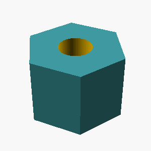
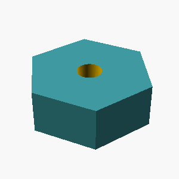
 {
// Hexagonal prism
linear_extrude(height = 18, $fn = 6) {
// This is a bit of a trick. A regular polygon with $fn=6 is a hexagon.
// To get the distance across the flats to be 30mm,
// the radius of the circumscribed circle needs to be 30mm / 2 = 15mm.
// For a hexagon, the distance across the flats is equal to 2 * apothem.
// The apothem is related to the radius R by apothem = R * cos(PI/6)
// So, 30 = 2 * R * cos(PI/6)
// R = 15 / cos(PI/6)
// cos(PI/6) = sqrt(3)/2
// R = 15 / (sqrt(3)/2) = 30 / sqrt(3)
// Let's verify: distance across flats = 2 * R * cos(PI/6) = 2 * (30/sqrt(3)) * (sqrt(3)/2) = 30. Correct.
// The polygon function requires the radius of the circumscribed circl")
L1 · example 16 · mean 1.00 · max 1.00
A solid cylinder 60mm tall with a radius of 5mm, standing upright.

;")
;")
L5 · example 17 · mean 0.23 · max 0.50
A solid torus (donut shape) lying flat on the table: the ring's centerline circle has a radius of 15mm and the circular tube cross-section has a radius of 5mm.

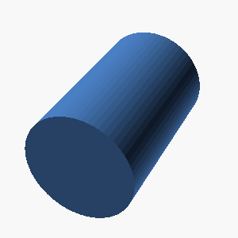

rotate_extrude(angle=360)
translate([15,0,0])
circle(r=5);")

rotate_extrude(r=15)
cylinder(h=1, r=5);")
 torus(r1=15, r2=5);")
L3 · example 18 · mean 0.87 · max 1.00
A solid box 55mm wide (x), 50mm deep (y), and 25mm tall, with 3 holes of radius 2mm drilled vertically through it, evenly spaced on a circle of radius 18.1mm around the center, the first hole on the +X axis; and a horizontal hole of radius 3mm drilled along the X axis through the whole part at half its height, centered in Y. The part sits on the z=0 plane, centered on the Z axis.

 {
// Main box
cube([55, 50, 25], center=true);
// Three vertical holes
for (i = [0, 1, 2]) {
rotate([0, 0, i * 120]) {
translate([18.1, 0, -0.1]) { // Extend slightly below to ensure clean cut
cylinder(h=25.2, r=2, center=true); // Extend slightly above and below
}
}
}
// Horizontal hole along X-axis
translate([0, 0, 0]) { // Centered on X, Y, Z
rotate([0, 90, 0]) { // Rotate to align with X-axis
cylinder(h=55.2, r=3, center=true); // Extend slightly beyond the box
}
}
}")
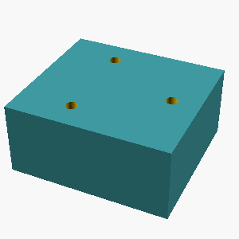
 {
// Main box
cube([55, 50, 25], center=true);
// Vertical holes
for (i = [0:2]) {
rotate([0, 0, i * 120]) {
translate([18.1, 0, -1]) { // Offset z by -1 to ensure it goes through the entire height
cylinder(h=27, r=2); // h=27 to ensure through the entire box (25mm) + some buffer
}
}
}
// Horizontal hole along X axis
translate([0, 0, 25/2 - 1]) { // Center at half height (25/2), offset z by -1 to ensure it goes through
rotate([0, 90, 0]) { // Rotate to be along the X axis
cylinder(h=55 + 2, r=3); // h=55 + 2 to ensure through the entire width (55mm) + some buffer
}
}
}")
 {
difference() {
// Solid box
cube([55, 50, 25], center=true);
// Vertical holes
translate([0, 0, -1]) cylinder(h=27, r=2); // Hole 1 (+X axis)
translate([0, 0, -1]) rotate([0, 0, 120]) cylinder(h=27, r=2); // Hole 2 (+120 deg)
translate([0, 0, -1]) rotate([0, 0, 240]) cylinder(h=27, r=2); // Hole 3 (+240 deg)
// Horizontal hole along X axis
translate([-55/2-1, 0, 25/2-12.5]) cylinder(h=55+2, r=3, center=true);
}
}
// Position the box so it sits on the z=0 plane and is centered on the z-axis
translate([0, 0, 25/2]) box_with_holes();")
L4 · example 19 · mean 0.55 · max 0.83
A gear-like disc 6mm thick with radius 25mm, with 6 rectangular teeth evenly spaced around its rim. Each tooth is 5mm wide and extends 6mm radially outward from the rim, spanning the full thickness of the disc.

 {
// Main disc
cylinder(h=6, r=25);
// Holes for teeth
for (i = [0:5]) {
rotate([0, 0, i * 60]) {
translate([18.5, -10, -0.1]) { // Position for tooth base
cube([5, 20, 6.2]);
}
}
}
}
// Add teeth
for (i = [0:5]) {
rotate([0, 0, i * 60 + 30]) { // Offset by 30deg to center teeth
translate([19.5, -2.5, 0]) { // Position to align with rim and thickness
cube([5, 12, 6]);
}
}
}")
 {
// Main disc
cylinder(h=6, r=25);
// Teeth
for (i = [0:5]) {
// Calculate rotation angle for each tooth
rotate([0, 0, i * (360/6)]) {
// Position the tooth so its center is at the rim
translate([25, 0, 0]) {
// Create the tooth shape
cube([5, 6, 6]); // width, depth (radial), height (thickness)
}
}
}
}")
 {
difference() {
// Main disc
cylinder(h=6, r=25);
// Cut out spaces for teeth
for (i = [0:5]) {
rotate([0, 0, i * 360 / 6]) {
translate([25, 0, 0]) {
cube([5, 10, 6], center=true);
}
}
}
}
// Add teeth
for (i = [0:5]) {
rotate([0, 0, i * 360 / 6]) {
translate([25 + 5/2, 0, 0]) {
cube([5, 10, 6], center=true);
}
}
}
}
gear_disc();")
 {
difference() {
// Main disc
cylinder(h = 6, r = 25);
// Remove material for teeth (underside) - not strictly necessary for this shape but good practice for gear generation
cylinder(h = 6.01, r = 25); // Slightly taller to ensure clean cut
// Teeth
for (i = [0:5]) {
rotate([0, 0, i * 60]) {
translate([19, -2.5, 0]) { // 25mm radius - 5mm tooth width / 2 = 22.5mm center offset from origin. Offset for tooth width.
cube([6, 5, 6]); // Extends 6mm radially, 5mm wide, full thickness
}
}
}
}
}
color(\"gray\") gear_disc();")
L5 · example 20 · mean 0.89 · max 0.91
A flat rectangular plate 75mm x 45mm and 5mm thick, with a rounded slot cut all the way through its center: the slot is 46mm long along the X direction and 12mm wide, with semicircular ends.

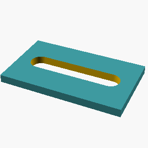
 {
cube([75, 45, 5]);
translate([19.5, 16.5, -1]) { // Position the slot center at the plate center
union() {
// Main rectangular part of the slot
cube([46 - 12, 12, 7]); // Length adjusted for semicircles, width, and extra height for cutting
// Left semicircle
translate([-(46 - 12) / 2, 0, 0]) // Center the semicircle
cylinder(h=7, r=6, $fn=64); // radius is half the width (12/2 = 6)
// Right semicircle
translate([(46 - 12) / 2, 0, 0]) // Center the semicircle
cylinder(h=7, r=6, $fn=64);
}
}
}")
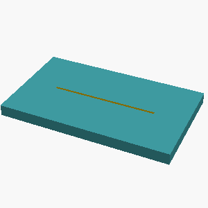
 {
cube([75, 45, 5]);
translate([37.5, 22.5, -0.1]) {
union() {
// Main rectangular part of the slot
cube([46, 12, 5.2], center = true);
// Left semicircle
translate([-23, 0, 0]) cylinder(h=5.2, r=6, center = true);
// Right semicircle
translate([23, 0, 0]) cylinder(h=5.2, r=6, center = true);
}
}
}")
L2 · example 21 · mean 1.00 · max 1.00
A solid box 60mm x 30mm x 55mm with a rectangular notch 14mm wide and 7mm deep cut into the middle of its top face, running through the full depth of the box.

 {
cube([60, 30, 55]);
translate([23, 0, 48]) {
cube([14, 30, 7]);
}
}")
 {
cube([60, 30, 55]);
translate([23, 0, 55-7]) {
cube([14, 30, 7]);
}
}")
L3 · example 22 · mean 0.64 · max 0.82
A solid hexagonal prism 20mm tall, 40mm across the flats, with two flats parallel to the x axis, with a hemispherical dome of radius 7mm centered on its top face; and 4 holes of radius 2mm drilled vertically through it, evenly spaced on a circle of radius 13.1mm around the center, the first hole on the +X axis. The part sits on the z=0 plane, centered on the Z axis.

 {
module hex_polygon(flat_to_flat) {
r = flat_to_flat / sqrt(3);
polygon(points=[
[r * cos(0), r * sin(0)],
[r * cos(60), r * sin(60)],
[r * cos(120), r * sin(120)],
[r * cos(180), r * sin(180)],
[r * cos(240), r * sin(240)],
[r * cos(300), r * sin(300)]
]);
}
linear_extrude(height=height) hex_polygon(flat_to_flat);
}
module hemisphere(radius) {
minkowski() {
sphere(r=radius);
cube([radius, radius, radius], center=true);
}
}
module drilled_holes(height, radius, circle_radius, num_holes, start_angle_deg) {
for (i = [0:num_holes-1]) {
angle_deg = start_angle_deg + i * (360 / num_holes);")
 {
linear_extrude(height = 20)
polygon(points=[
[0, 20],
[-17.32, 10],
[-17.32, -10],
[0, -20],
[17.32, -10],
[17.32, 10]
]);
}
module hemispherical_dome() {
sphere(r = 7);
}
module drill_hole() {
cylinder(h = 20, r = 2);
}
difference() {
union() {
hexagonal_prism();
translate([0, 0, 20])
rotate(a = 90, v = [1, 0, 0])
hemispherical_dome();
}
// Holes
for (i = [0:3]) {
rotate([0, 0, i * 90])
translate([13.1, 0, 0])
drill_hole();
}
}")
 {
linear_extrude(height = 20) {
// Calculate apothem for hexagon with distance across flats = 40mm
// distance_across_flats = 2 * apothem / cos(30deg)
// 40 = 2 * apothem / (sqrt(3)/2)
// 40 = 4 * apothem / sqrt(3)
// apothem = 40 * sqrt(3) / 4 = 10 * sqrt(3)
apothem = 10 * sqrt(3);
diameter_across_corners = apothem / cos(30);
polygon(points = [
[cos(0) * diameter_across_corners, sin(0) * diameter_across_corners],
[cos(60) * diameter_across_corners, sin(60) * diameter_across_corners],
[cos(120) * diameter_across_corners, sin(120) * diameter_across_corners],
[cos(180) * diameter_across_corners, sin(180) * diameter_across_corners],")
 {
hull() {
for (i=[0:5]) {
rotate([0,0,i*60]) translate([size_across_flats/2, 0, 0]) cylinder(h=height, r=0.1);
}
}
}
module bottom_shape() {
module hex_shape() {
polygon(points=[[cos(0)*20, sin(0)*20], [cos(60)*20, sin(60)*20], [cos(120)*20, sin(120)*20], [cos(180)*20, sin(180)*20], [cos(240)*20, sin(240)*20], [cos(300)*20, sin(300)*20]]);
}
hex_shape();
}
difference() {
union() {
// Main hexagonal prism
linear_extrude(height=20) {
offset(delta = -20 * tan(30)) { // Size across flats is 40, so distance from center to flat is 20
polygon(points=[[cos(0)*20, sin(0)*20], [cos(60)*20, sin(60)*20], [cos(120)*20, sin(120)*20], [cos(1")
L5 · example 23 · mean 0.68 · max 1.00
Create a D-shaft: a 50mm-tall cylinder of radius 20mm whose +X side is sliced off by a vertical plane 13mm from the axis, leaving a flat running the full height.

 {
cylinder(h = 50, r = 20, $fn = 64);
translate([13, -21, -1]) cube([20, 42, 52]); // Large enough to slice off the positive X side
}")
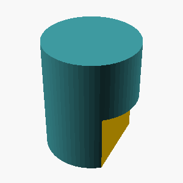
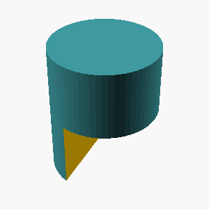
L1 · example 24 · mean 1.00 · max 1.00
A solid rectangular box 65mm wide, 50mm deep, and 20mm tall.

;")
L2 · example 25 · mean 0.82 · max 0.86
A solid box 30mm x 30mm x 30mm with a rectangular notch 10mm wide and 5mm deep cut into the middle of its top face, running through the full depth of the box.

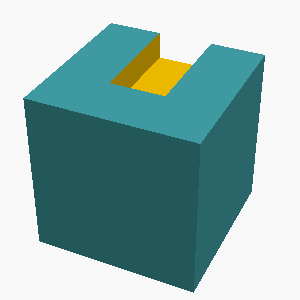
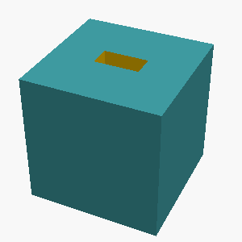
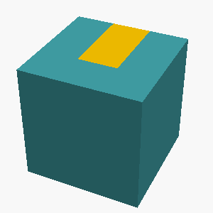
L5 · example 26 · mean 0.92 · max 1.00
Create a 65x45x15mm block with a centered vertical through-hole of radius 5mm, counterbored from the top face to radius 9mm over a depth of 9mm.

 {
cube([65, 45, 15]);
// Through-hole
translate([32.5, 22.5, 0]) cylinder(h=15, r=5, $fn=64);
// Counterbore
translate([32.5, 22.5, 15-9]) cylinder(h=9, r=9, $fn=64);
}")
 {
cube([65, 45, 15]);
translate([65/2, 45/2, 0]) {
// Through-hole
cylinder(h=15, r=5, $fn=64);
// Counterbore
translate([0, 0, 15 - 9]) {
cylinder(h=9, r=9, $fn=64);
}
}
}")
 {
cube([65, 45, 15]);
// Through-hole
cylinder(h=15, r=5, center=true, $fn=64);
// Counterbore
translate([0, 0, 15 - 9]) {
cylinder(h=9, r=9, $fn=64);
}
}")
 {
cube([65, 45, 15]);
// Through-hole
cylinder(h=15, r=5, center=true, $fn=64);
// Counterbore
translate([0, 0, 15 - 9]) {
cylinder(h=9, r=9, $fn=64);
}
}")
L4 · example 27 · mean 0.53 · max 0.77
A hexagonal prism (like a nut) 10mm tall, measuring 30mm across the flats, with a circular hole of radius 5mm drilled through its center along the axis.

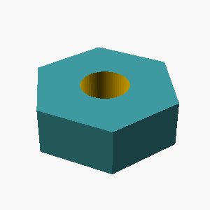
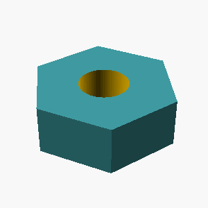
 {
$fn = 6;
linear_extrude(height=height) {
polygon(points=[
[width_across_flats/2, 0],
[width_across_flats/4, width_across_flats/(2*tan(30))],
[-width_across_flats/4, width_across_flats/(2*tan(30))],
[-width_across_flats/2, 0],
[-width_across_flats/4, -width_across_flats/(2*tan(30))],
[width_across_flats/4, -width_across_flats/(2*tan(30))]
]);
}
}
difference() {
hexagonal_prism(height=10, width_across_flats=30);
translate([0, 0, -0.1]) cylinder(h=10.2, r=5);
}")
 {
linear_extrude(height = 10, $fn = 6) {
// A regular hexagon with distance across flats of 30mm.
// The distance from the center to a vertex is apothem / cos(30)
// The distance from the center to the midpoint of a side (apothem)
// is half the distance across flats.
// For a hexagon, distance across flats = 2 * apothem
// So, apothem = 30 / 2 = 15mm.
// radius = apothem / cos(30 degrees) = 15 / (sqrt(3)/2) = 30 / sqrt(3)
// However, a simpler way is to consider the inscribed circle.
// The distance across flats of a regular hexagon is the diameter of its inscribed circle.
// So, the distance across flats is 2 * apothem.
// If distance across flats is 30, apothem is 15.
// The")
L1 · example 28 · mean 1.00 · max 1.00
A solid rectangular box 40mm wide, 40mm deep, and 20mm tall.

;")
L5 · example 29 · mean 0.26 · max 0.41
A plus-sign-shaped prism 15mm tall: two rectangular bars, each 65mm long and 10mm wide, cross at right angles at their centers (one along X, one along Y), centered on the Z axis.

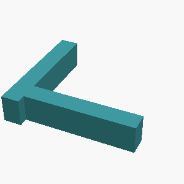
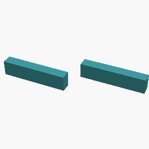
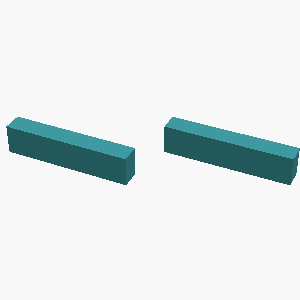